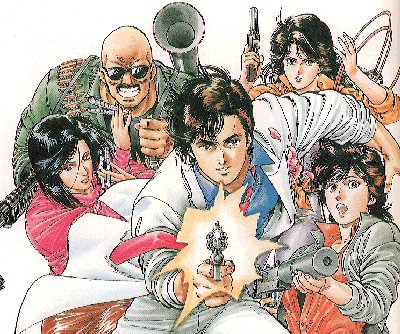

City Hunter

From the Anime Pocket Guide:
Cast:
Ryo Saeba .................................. Akira Kamiya
Kaori Makumura .............................. Kazue Ikura
Kaoru Saejima ............................ Chika Sakamoto
Saeko Nogami .............................. Youko Asagami
Umibozu .................................... Tessho Genda
Atsuko Kawada ................................. Keiko Han
Mitsuko Shimizu ........................... Noriko Hidaka
Michael Garland ............................ Masaru Ikeda
Machiko Gamou ................................. Miki Itou
Yoshimi Iwai .............................. Yuko Mizutani
Sayuri Tachiki ....................... Yoshiko Sakakibara
Midori Oohara ............................. Saeko Shimazu
Reiko Yuuki .................................. Run Sasaki
Arisa Hoshino ............................... Yumi Takada
Yuuki Oikawa ................................ Yumi Takada
Reika Nogami ........................... Yoshino Takamori
Mei Asaoka .............................. Minami Takayama
Hideyuki Makimura ....................... Hideyuki Tanaka
Yumiko Satou ................................. Keiko Toda
Saori Murakoshi .......................... Gara Takashima
Chihiro Nanno ............................. Hitomi Oikawa
Megumi Iwazaki .............................. Miyuki Ueda
Kei Amamiya/Ami Asaka ....................... Yuko Sasaki
Miki ........................................ Mami Koyama
Kumi ..................................... Keiko Yokozawa
killer ................................ Yoshitada Ohtsuka
Utako Yumeno ................................. Waka Kanda
Atsushi Tezuka ......................... Hidehiro Kikuchi
Bloody Mary .............................. Makoto Kousaka
Kikunosuke Fubuki ....................... Miyuki Matsuoka
Nana Yoshida ................................. Youko Ogai
Reiko Yoshida ............................ Natsumi Sakuma
Eriko ....................................... Rumiko Ukai
Kasumi Asao (ep #11) ............... Miina Tominaga
Nagisa Matsumura (ep #14) ............. Yuriko Fuchizaki
Catherine Hayward (ep #66-67) .............. Hiromi Tsuru
Keiko Kashiwagi (City Hunter 2) .......... Youko Matsuoka
Sarina (City Hunter 2) .............. Eriko Hara
Mika (City Hunter 2) .......... Yuko Minaguchi
Kiyomi (City Hunter 2) ............ Sanae Miyuki
Misa Williams (City Hunter 2) .............. Yumi Touma
Misuzu Moriwaki (City Hunter 3) ...... Megumi Hayashibara
Robert (City Hunter 3) ........... Hideyuki Hori
Junko (City Hunter '91) ........... Ikue Ohtani
Luna (Bay City Wars) .......... Yuko Kobayashi
Description:
If you're desperate and need a job done, write "XYZ" on the
bulletin board at Shinjuku Station. That is a signal that you
want to hire City Hunter. Ryo Saeba and Kaori Makumura make up
City Hunter. Ryo is calm, cool, and an amazingly accurate shot.
He is also the biggest lech since Ataru Moroboshi. Kaori is the
sister of Ryo's deceased partner and runs the business side of
City Hunter. She is also the only woman who Ryo *hasn't* made a
pass at. The jobs have ranged from being a bodyguard (usually a
pretty girl :-)) to virtual espionage. Kaori has kept Ryo's
frequent sukebe tendencies in check with an 50,000 kg mallet. :-)
This is an action-adventure with some comedy elements.
Other Resources
Anime Video Game Resource Center © 1998 by Luis A. Cruz